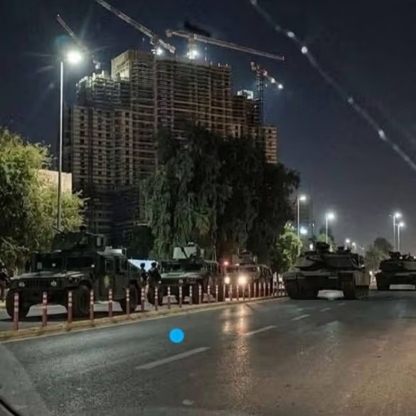
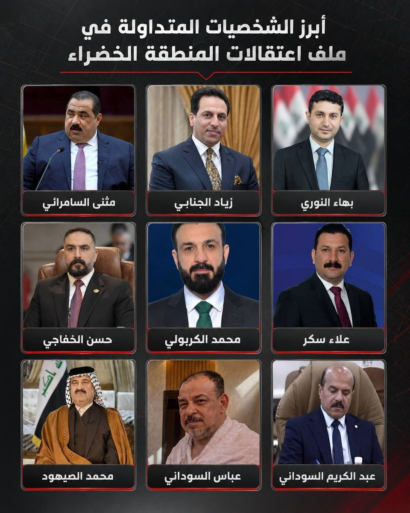

Before dawn on Sunday, June 28, Counter-Terrorism Service units sealed every entrance to Baghdad's Green Zone and started making arrests. By the time the gates reopened, the official Iraqi News Agency was reporting 47 people in custody. Within two days Shafaq News had pushed that to 67, with officials briefing that "Phase One" of the campaign — they are calling it Operation Fajr, Operation Dawn — could eventually run past 200 names.

The man who ordered it has been in office for six weeks. Ali al-Zaidi was sworn in on May 14, a 41-year-old banker with no prior government post, pushed through by the Shiite Coordination Framework as a compromise candidate after a five-month deadlock. That deadlock started when Washington vetoed Nouri al-Maliki's attempt to come back as prime minister. It is worth holding onto that detail, because almost everything strange about this crackdown traces back to the gap between who won the November election and who ended up running the country.
On the surface this is exactly the operation Iraq's partners have been demanding for years — a prime minister freezing assets, handing out travel bans, lifting parliamentary immunity, pulling sitting MPs out of their homes. And the trigger was real. A former deputy oil minister, Adnan al-Jumaili, was picked up at the end of May, and it was his confessions that opened the door; the Supreme Judicial Council says investigators seized roughly $86 million from him, along with seventy properties, twenty-one vehicles and about three kilos of gold. Nobody is going to stand up in public and defend a man with that inventory in his garage.
But look at the list of who got swept up, and then look at the list of who did the applauding from outside the cells. That gap is the story.
What Actually Happened
The names that have surfaced fall into two clusters, and the clustering is the first thing worth noticing.

The first cluster is Sunni. Muthanna al-Samarrai, head of the Azm Alliance and a sitting MP, is the most senior person in custody. Mohammed Nasir al-Karbouli, an Azm MP already under a documented bribery investigation, is in there too. So is Ziyad al-Janabi, tied to Khamis al-Khanjar's Siyada coalition and a former chair of parliament's Integrity Committee — there is a certain irony in the man who once ran corruption oversight being among the first lifted. Add Mudhar al-Karawi from Diyala, Hind al-Abbasi, Mohammed Farman al-Jubouri, and the director of Azm's office, and you have the leadership tier of one of Iraq's main Sunni vehicles substantially decapitated in a single night.
Sunni detainees (confirmed)
- Muthanna al-Samarrai — head of Azm Alliance, sitting MP
- Mohammed Nasir al-Karbouli — Azm MP, documented bribery investigation
- Ziyad al-Janabi — Siyada coalition, former chair of parliament's Integrity Committee
- Mudhar al-Karawi — Diyala
- Hind al-Abbasi, Mohammed Farman al-Jubouri
- Director of Azm's office
The second cluster is Shiite, but a very specific kind of Shiite. It opens with Bahaa al-Nouri, an MP from Mohammed Shia al-Sudani's Reconstruction and Development Coalition, and runs through Alia Nassif — also RDC, with a reported $15.5 million in cash found at her home and a son who reportedly worked in Sudani's office — and Hassan al-Khafaji, an RDC businessman. Then come a former Wasit governor, a former MP who is a relative of Sudani, a former Sudani adviser. There are unconfirmed reports on top of that — single-source, so treat them as watching rather than established — that Sudani's own brother and his office chief were taken as well.
Sudani is the former prime minister, and his coalition won the most seats in November — 46 of them, more than anyone else — only to see him denied a second term and replaced by al-Zaidi. Which means the Shiite half of this crackdown is not a cross-section of the Shiite political class at all. It is, almost exclusively, the bloc that won the election and lost the government.
The one detainee who breaks the pattern is Ali Maarij, the deputy oil minister for distribution, and he breaks it in a way that matters. Maarij was sanctioned by the US Treasury in May over blending Iranian oil into Iraqi exports. He is the single name on this list who fits the profile of what Washington has actually been trying to disrupt in Iraq for years. Hold that thought.
Now the other list. Maliki — the man Washington blocked from the premiership — congratulated Operation Fajr by name on X and told al-Zaidi to carry it through to the end. A Badr MP praised the campaign and pointed to US support as the thing that made it possible, Ammar al-Hakim welcomed it as a win for the rule of law, and Muqtada al-Sadr backed it too. By the time the Coordination Framework had endorsed it as a body, every militia-linked faction at the core of the governing coalition had lined up to applaud a corruption sweep that did not touch a single one of them.
The charges are mostly real. The selection is political.
The Decisive Test
When you suspect a crackdown is selective rather than blind, there is a clean way to test it: you ask whether anyone genuinely protected got caught in the net. In Iraq the genuinely protected are not the Sunni MPs from Anbar but the financiers and party bosses who own the patronage networks — Badr, Asaib Ahl al-Haq, Kataib Hezbollah, the State of Law machine. Those are the networks that US Treasury filings and OCCRP investigations have repeatedly identified as the real channels for dollar smuggling and Iranian oil money, and if Operation Fajr were a technocratic clean-up you would expect at least some of them in the dragnet.
None of them are. Not one figure from the militia-linked core of the Coordination Framework appears on any detainee list. The men who control the actual machinery of Iraqi corruption are the ones sending congratulatory tweets.
Omar Mohammed, who runs the research that first mapped much of this network and now writes from George Washington University's Program on Extremism, put it about as sharply as it can be put in The National this week. He argued the sweep is better understood as the opposite of what it claims — the sectarian system that produces the corruption performing maintenance on itself, removing a rival faction while leaving the machinery intact. His test for whether Fajr is serious is whether it ever reaches the party leaders and financiers who own the networks, rather than the officials who merely staffed them. And those financiers, as he notes, are among the people congratulating the detainees from outside the cells.
This is not fabricated corruption. It is selective enforcement of real corruption, and the selection has a pattern: the Sunni political class with external connections, and the Shiite bloc that won an election it was not allowed to convert into power.
What This Costs Turkey, and What It Doesn't
The intuitive move is to say Turkey has the most to lose. The Sunni blocs being thinned out — Azm especially — are the ones with the deepest lines into Ankara, and Khanjar, who built Azm, carries Turkish relationships along with his Qatari passport. Take out the Turkey-friendly Sunni interlocutors and Ankara is short of contacts in Baghdad at a bad moment.
That is true at the margins and overstated at the core. The problem with the "Ankara depends on these men" framing is that almost nothing in the actual Turkey-Iraq relationship runs through Anbar Sunni politicians.
Take the three files that matter most. The Development Road — the $17 billion rail-and-road corridor from the Grand Faw Port to the Turkish border, with a master plan by an Italian firm and the build awarded to Alstom — is an intergovernmental project. It was signed by Baghdad, Ankara, Abu Dhabi and Doha at prime-ministerial level, and Sudani himself inaugurated the first 63-kilometer stretch in December. No Sunni bloc leader sits anywhere near that table. The PKK file runs through Ocalan, Qandil and the Turkish state directly: the PKK declared its own dissolution in May 2025, started disarming over the summer, and the verification mechanism has been grinding through the Turkish parliament since. The water disputes and the oil-for-water arrangements are Baghdad and Erbil business. On all three, Iraqi Sunni Arab politicians are essentially spectators.
So jailing Samarrai genuinely removes a Turkey-friendly voice from Baghdad. It does not put a dent in Ankara's structural leverage, because that leverage was never routed through him. The honest version of the Turkey angle is narrower and more useful: the crackdown clears out interlocutors Ankara found convenient, at a time when Ankara would have preferred not to lose them, while leaving the actual machinery of Turkish influence untouched.
The Gulf Bet, Partly True
The same discipline applies to the Gulf. The conventional mapping has Riyadh and Abu Dhabi betting on Halbousi and Taqaddum as the Sunni partner they could work with, and Doha working through Khanjar and Azm. That mapping is real enough — Khanjar holds Qatari citizenship and has been called Qatar's man in Baghdad, and Taqaddum has been the more Saudi-comfortable of the Sunni vehicles. If Halbousi's people get picked off one by one while he is left exposed, the Saudi-Emirati bet does start to look worse.
But Gulf-Iraq relations in 2026 run mostly state-to-state, through energy and investment tracks with Baghdad's government, not through Sunni bloc leaders. And the Gulf's attention right now is somewhere else entirely. The Saudi-Emirati relationship has ruptured — the UAE walked out of OPEC in May, Saudi Arabia bombed Emirati-linked targets in southern Yemen in December — and both capitals are absorbed by the post-Hormuz oil picture and Gaza reconstruction. The fate of a handful of Anbar politicians is not what is keeping anyone awake in Riyadh.
Which leaves Halbousi himself in a peculiar spot. He leads Taqaddum, still the largest Sunni party at 27 certified seats. He was thrown out of the speakership by the Federal Supreme Court in late 2023 over forgery, then cleared of everything in 2025, and his cousin Haibat now holds the speaker's chair in what everyone reads as a proxy arrangement. He has not been charged. The claims that CTS raided his headquarters were never confirmed by any wire service, and should be treated as unverified. But his bloc's MPs are being arrested, his rival Samarrai is in a cell, and he is sitting there uncharged and entirely aware that the file on him reopened the moment it became convenient. "Left hanging" is exactly right.
The Readings That Complicate the Clean Version
If this is a selective purge, there are three alternative explanations that fit the same facts and point somewhere else. The strongest version of this analysis doesn't dismiss them — it absorbs them.
The first is intra-Shiite consolidation. The loudest tell here is Maliki's enthusiasm. The Shiite detainees are Sudani's people, and Sudani is Maliki's rival who was just denied a second term. Read this way, Fajr is the victorious Framework factions, working through Faiq Zaidan's judiciary, kneecapping the bloc that beat them at the ballot box — with Sunnis swept up as convenient co-targets rather than the main objective. A campaign that genuinely threatened the system, as The National put it, would not be drawing applause from one of the system's principal architects.
The second is Sunni-on-Sunni. Halbousi, Khanjar and the Karboulis have spent a decade at each other's throats. Jamal al-Karbouli helped launch Halbousi's career in 2014 and then turned on him; Halbousi built his own anti-corruption squads and used them against rivals enthusiastically enough to earn some unkind nicknames. Jailing Samarrai of Azm while leaving Halbousi of Taqaddum untouched could be read as Sunni factional warfare blessed by the Shiite center, rather than an attack on Sunnis as a category.
The third is the simplest: that the corruption is just real. The Jumaili oil graft, the cash in Nassif's house, the Saudi hospital grant that Jamal al-Karbouli was convicted of looting earlier this month, Maarij's oil blending. These are not invented. The honest framing was never "fake charges." It is that real charges were applied to a carefully chosen subset of guilty people while an equally guilty subset was left alone.
These readings are not rivals to the Gulf-and-Turkey reading. They are the same operation seen from different angles. A purge can settle Maliki's score with Sudani, thin the Sunni network the Gulf and Turkey use, and prosecute genuine theft, all at once. That is what makes it effective. The selectivity is the point, and the selectivity serves several masters in the same night.
Washington's Read, and the Irony at the Center of It
For an administration in the middle of winding down a war with Iran, a tighter Iraqi state is useful. Operation Epic Fury opened on February 28; a ceasefire held through April; the two presidents signed a memorandum on June 17 to formally close the conflict within sixty days. Through all of it, the constant American demand of Baghdad has been the same one it has made for years — choke off the financial channels that move dollars and oil money to Iran. By February, nearly a third of Iraq's banks were under US sanctions. The central bank has digitized almost the entire transfer system. The Fed has kept Baghdad on a short leash for dollar shipments.
So a prime minister cracking down on dirty money, two weeks before his first visit to Washington, is doing precisely what the Americans keep asking for. A diplomat in Baghdad told AFP the operation was part of the preparations for that visit. And on the same afternoon the arrests were happening, Iran's foreign minister Abbas Araghchi was in Baghdad pledging deeper cooperation. Both patrons walked away satisfied on the same day. That is not an accident; that is the whole skill of governing Iraq from the middle.
But sit with the composition of the list one more time, because this is the part that resists being explained away. The networks Washington most wants disrupted — the militia-financial machine that actually moves the money — are the ones doing the applauding. The single detainee who fits the American target profile is Maarij, the oil-blending official, and he is one name out of dozens. Everyone else is either a Gulf-friendly Sunni or a member of the bloc that won the election. Al-Zaidi gets to hand Washington a corruption scalp in July while leaving the real target untouched, and Washington, with one eye on Hormuz and the other on closing out the war, has every reason to take the scalp and not ask too many questions about whose head it came from.
What Would Change the Reading
This holds as a selective purge dressed in an anti-corruption label. But the next two weeks will tell us whether that reading survives.
If Phase Two reaches the Badr, Asaib or Kataib Hezbollah financiers — the people who own the networks rather than the people who staffed them — then this is something closer to a real clean-up. If Khanjar himself gets detained, or Halbousi is formally charged rather than just left exposed, the "thinning the Sunni network" thesis weakens considerably, because at that point the campaign is hitting the principals and not just the deputies.
The other way runs the opposite direction. If the arrests stall out after the Sunni names and Sudani's people, and the September deadline for militia disarmament slides past with no warrants for anyone militia-linked, then the selective reading is simply confirmed. We will know which one it is soon enough. Either someone genuinely protected inside the Framework goes down too, or the list stays Sunnis plus the bloc nobody in power wanted in power, and the regional story tells itself, label or no label.